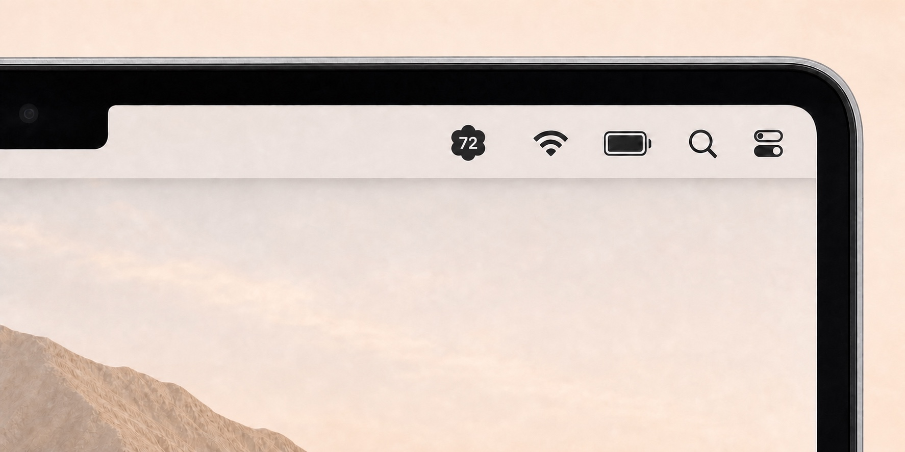
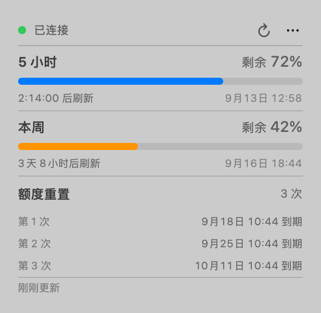
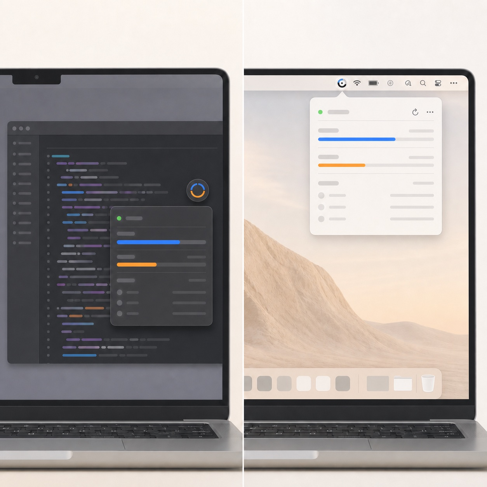

在菜单栏里，
查看 Codex 额度。
不用切出当前窗口。5 小时、本周额度和刷新时间，点一下菜单栏就知道。
v0.2.0 · macOS 14+ · Apple Silicon & Intel



为什么放在菜单栏
入口固定，不挡代码和网页。
悬浮圆钮收起后，仍会占用工作区。放进菜单栏后，切换应用也不用给它重新找位置。
菜单栏拥挤时，它确实没那么显眼。但对于偶尔查看额度，这个位置更合适。
只专注 Codex
- 查看
- 额度、刷新时间和重置到期时间集中在一个面板，支持中英文。
- 状态
- 自动刷新、断线重连。本地任务运行时有颗粒动画，结束后停止。
- 隐私
- 数据在本机处理，不读取 auth.json，无广告、无统计。了解数据读取范围
安装说明
免费开源，安装包托管在 GitHub Releases。
安装与首次打开
先安装并登录 Codex CLI，再解压下载的 ZIP，将应用拖入「应用程序」并打开。
安装包尚未经过 Apple 公证。若系统阻止打开，请在确认来源可信后，前往「系统设置 → 隐私与安全性」选择「仍要打开」。